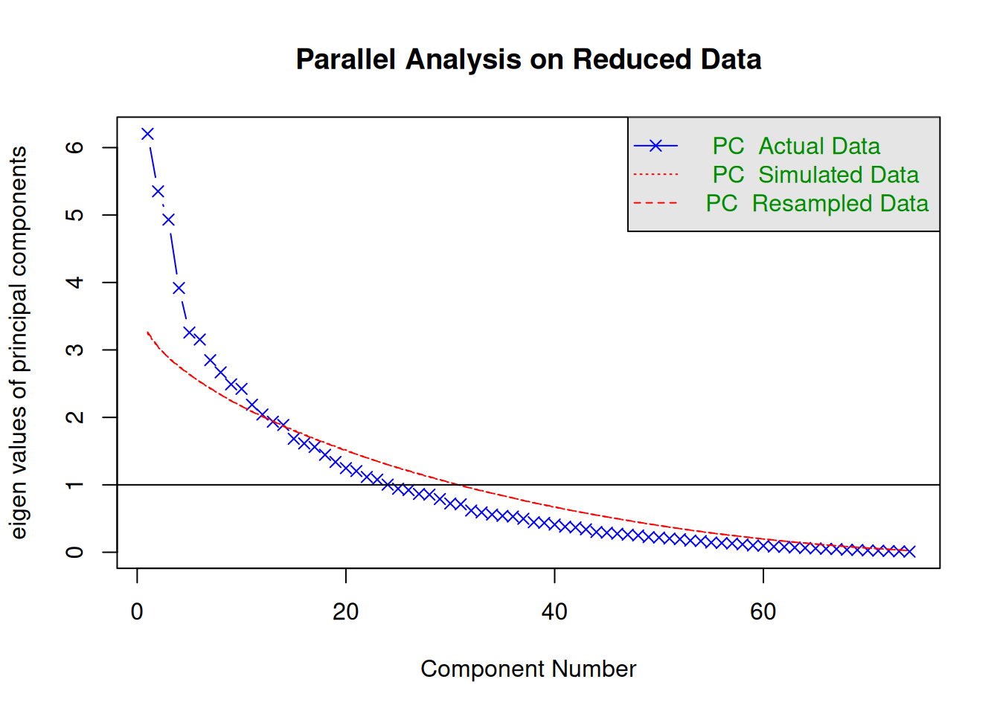
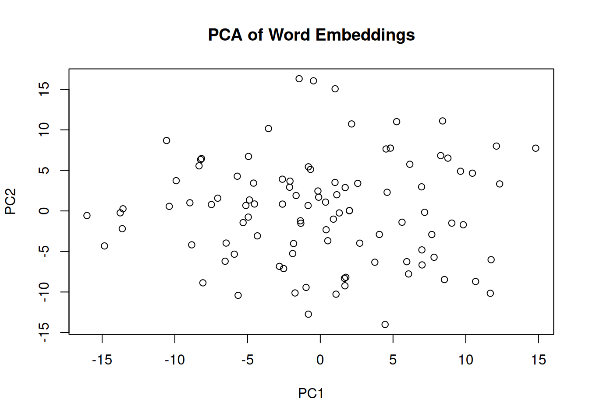
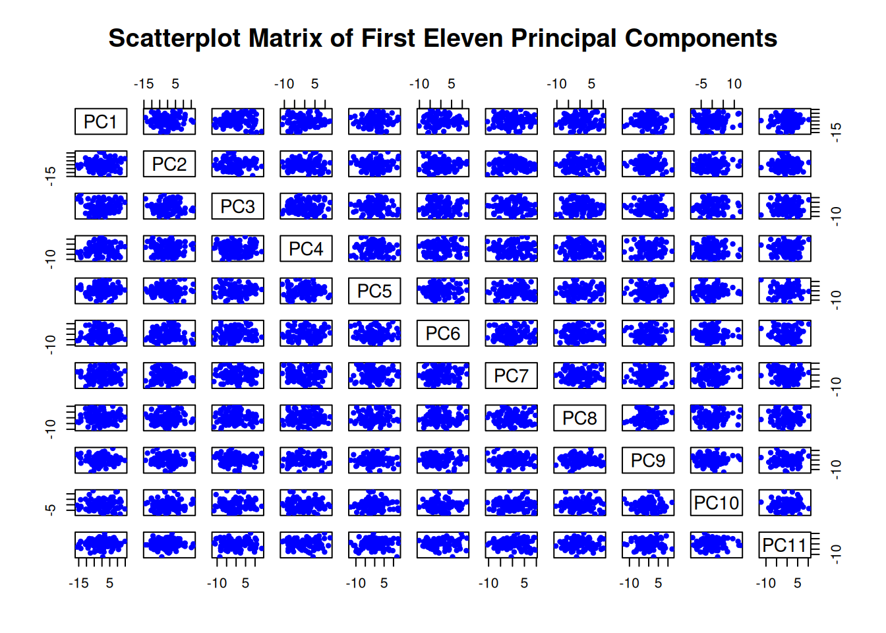
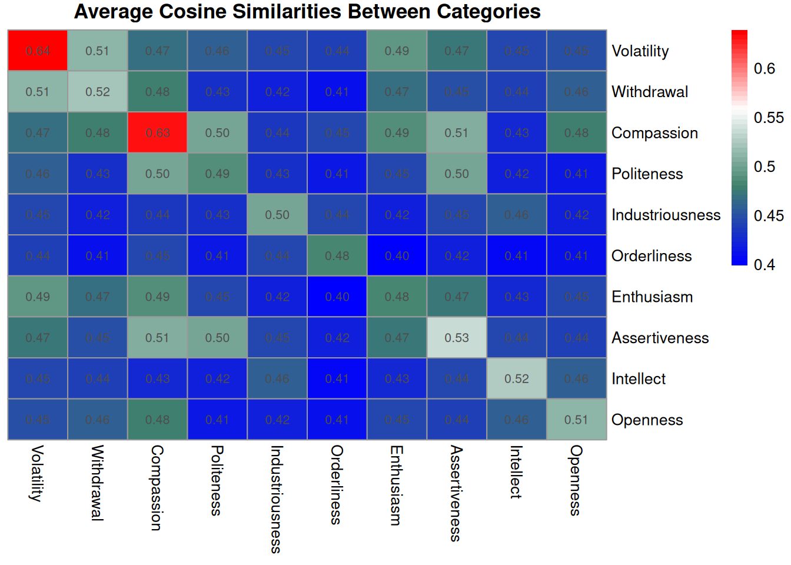
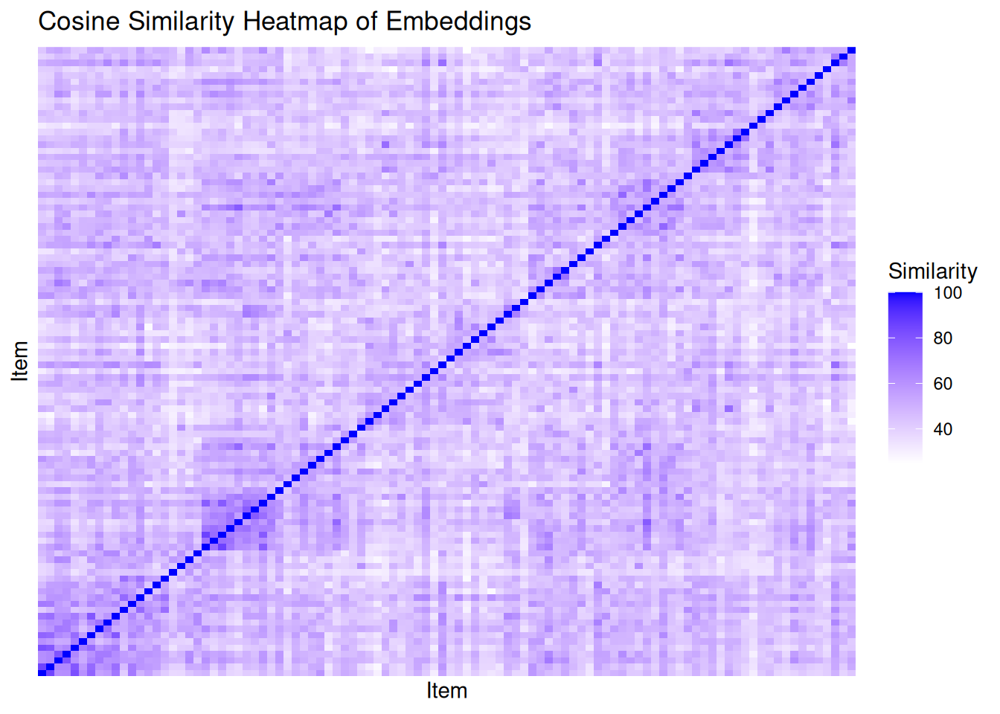
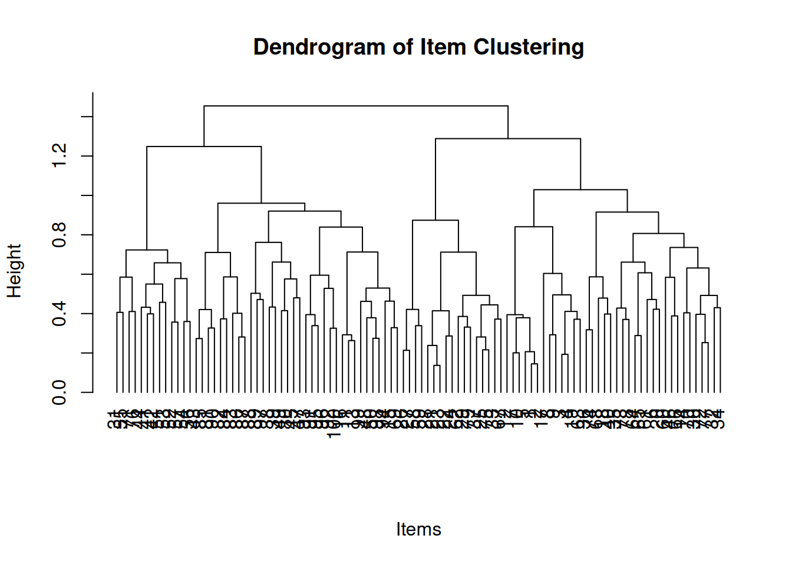
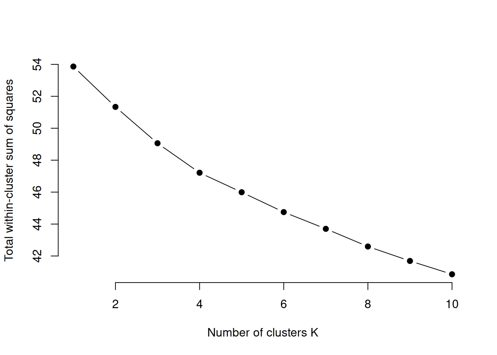
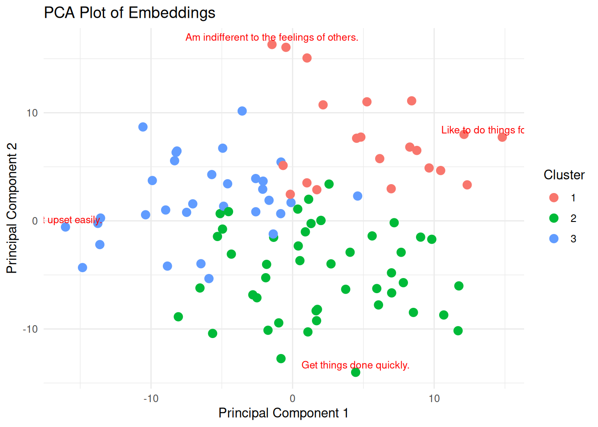
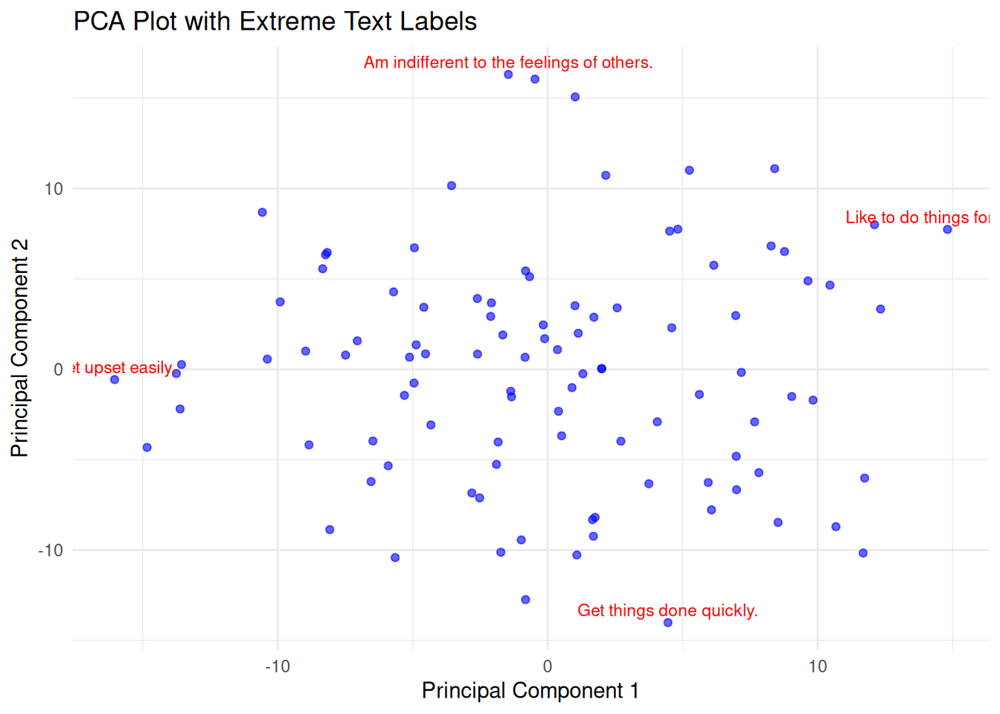
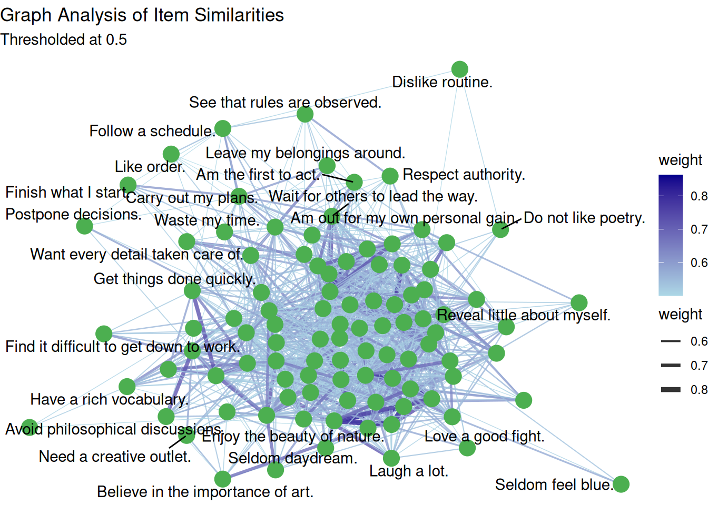

| String | Embeddings |
|---|---|
| The vector of numbers in the column 'Embeddings' is the embedded representation of this statement. | 0.0294, 0.0683, -0.1596, -0.0648, 0.0532, -0.0354, 0.0582, -0.0249, -0.0375, -0.0313, -0.0613, -0.0321, 0.0754, -0.0107, -0.0135, 0.0394, -0.0031, ... |
Work in progress
Methodology
Generating Word Embdeddings
fdf
Previously talked about word embeddings.
Some reports on the relationship between word embeddings and psychometric characteristics. Let’s demonstrate step by step, understand how this works.
In my current set up, I use lm-studio. Handles the model interaction. Host model on a local server and interact, sending json with different parameters. Code chunk that has the interaction of sending strings and receiving embeddings back.
- Convert strings into word embeddings
- Calculate cosine similarity between each pair of words
- Average cosine similarity of? Maybe correlation?
First, let’s generate some embeddings. To demonstrate what I mean, below we have a string and a set of parameters that represent this string in latent space. The vector of numbers you see here is truncated, with the length being 738 in total.
We can do the same now with each of the items in the big 5 aspects scale.
Table with

Parallel analysis suggests that the number of factors = NA and the number of components = 11 

| PC1 | PC2 | PC3 | PC4 | PC5 | PC6 | PC7 | PC8 | PC9 | PC10 | PC11 |
|---|---|---|---|---|---|---|---|---|---|---|
| Get upset easily. | Am indifferent to the feelings of others. | Get angry easily. | Know how to captivate people. | See myself as a good leader. | Do not have an assertive personality.d | Think quickly. | Am afraid of many things. | Am not embarrassed easily. | Seldom feel blue. | Avoid philosophical discussions. |
| Get easily agitated. | Feel others’ emotions. | Am filled with doubts about things. | Have a rich vocabulary. | Am not interested in other people’s problems. | Do not like poetry. | Am easily discouraged. | Rarely get caught up in the excitement. | Postpone decisions. | See that rules are observed. | Lack the talent for influencing people. |
| Like to do things for others. | Sympathize with others’ feelings. | Love to reflect on things. | Am not bothered by disorder. | Can’t be bothered with other’s needs. | Become overwhelmed by events. | Love a good fight. | Waste my time. | Am hard to get to know. | Respect authority. | Laugh a lot. |
| Rarely get irritated. | Get things done quickly. | Get easily agitated. | Want everything to be “just right.” | Avoid philosophical discussions. | Have a strong personality. | Want every detail taken care of. | Dislike routine. | Formulate ideas clearly. | Seldom notice the emotional aspects of paintings and pictures. | Seek conflict. |
| Get angry easily. | Think quickly. | Can talk others into doing things. | Make friends easily. | Show my feelings when I’m happy. | Lack the talent for influencing people. | Have a lot of fun. | Have a lot of fun. | Reveal little about myself. | Need a creative outlet. | Make friends easily. |
Calculating scores
One thing that would be interesting to do next, would be to generate scores based on the components that are identified here. Internal consistency, correlations between scores. Observe factor structure even. We can’t do that today, don’t have responses.
Point out along the way, the number of principal components here is somewhat arbitrary. Could be up to 25 even.
Cosine similarity
| Volatility | Withdrawal | Compassion | Politeness | Industriousness | Orderliness | Enthusiasm | Assertiveness | Intellect | Openness | |
|---|---|---|---|---|---|---|---|---|---|---|
| Volatility | 0.64 | 0.51 | 0.47 | 0.46 | 0.45 | 0.44 | 0.49 | 0.47 | 0.45 | 0.45 |
| Withdrawal | 0.51 | 0.52 | 0.48 | 0.43 | 0.42 | 0.41 | 0.47 | 0.45 | 0.44 | 0.46 |
| Compassion | 0.47 | 0.48 | 0.63 | 0.50 | 0.44 | 0.45 | 0.49 | 0.51 | 0.43 | 0.48 |
| Politeness | 0.46 | 0.43 | 0.50 | 0.49 | 0.43 | 0.41 | 0.45 | 0.50 | 0.42 | 0.41 |
| Industriousness | 0.45 | 0.42 | 0.44 | 0.43 | 0.50 | 0.44 | 0.42 | 0.45 | 0.46 | 0.42 |
| Orderliness | 0.44 | 0.41 | 0.45 | 0.41 | 0.44 | 0.48 | 0.40 | 0.42 | 0.41 | 0.41 |
| Enthusiasm | 0.49 | 0.47 | 0.49 | 0.45 | 0.42 | 0.40 | 0.48 | 0.47 | 0.43 | 0.45 |
| Assertiveness | 0.47 | 0.45 | 0.51 | 0.50 | 0.45 | 0.42 | 0.47 | 0.53 | 0.44 | 0.44 |
| Intellect | 0.45 | 0.44 | 0.43 | 0.42 | 0.46 | 0.41 | 0.43 | 0.44 | 0.52 | 0.46 |
| Openness | 0.45 | 0.46 | 0.48 | 0.41 | 0.42 | 0.41 | 0.45 | 0.44 | 0.46 | 0.51 |

I’d like to add some description to these aspects, perhaps by taking the embeddings of the entire aspect, and then looking up the single words or n grams that have the highest cosine similarity, as a means of ‘describing’ that cluster.
PCA
We’ve already done PCA on the embeddings. This told us about the clusters of words (fill out), which we laid out above.
We now have a similarity matrix - a matrix of pairwise cosine similarities between each item’s embeddings. What would dimensionality reduction look like here? Basically, groups of items that tend to be similar to one another.
Need to apply some interpretation here. What does it mean to have three clusters based on the pairwise cosine similarities? What do clusters mean, what dissociates them?


[1] 1 1 1 1 1 1 1 1 1 1 2 1 2 1 2 2 1 1 1 1 3 3 3 3 3 3 3 3 3 1 2 1 3 1 1 1 3
[38] 2 2 1 2 2 2 2 2 1 2 2 2 2 2 2 2 2 2 2 2 3 3 1 1 3 1 1 1 1 3 1 2 1 2 1 1 1
[75] 3 2 1 1 3 2 2 2 2 2 2 2 2 2 2 2 2 2 2 2 2 2 2 2 2 2
[1] 3 3 3 3 3 3 3 3 3 3 2 3 2 3 2 2 3 3 3 3 1 1 1 1 1 1 1 1 1 3 2 3 1 3 1 1 1
[38] 2 3 1 2 2 2 2 2 2 2 2 2 2 2 2 2 2 2 2 2 3 3 2 3 1 3 3 3 2 1 2 3 3 2 3 1 3
[75] 1 2 3 1 1 2 2 2 2 2 2 2 2 2 2 2 2 2 2 2 1 2 2 2 2 3

We can also use each item as a node, and treat their cosine similarities as edge strength, to visualise the relationships between items.

Point to the new articles by guenole, and the working paper. They address difference metrics maybe
Now that we’ve done that the results either show that strings are similar when they’re categorised together, or not. Either way, we’re going to take the items, concatenate them together in a single chunk, and convert to embeddings. Is this the best way to do this? Not sure. Single words that are most similar to this item?